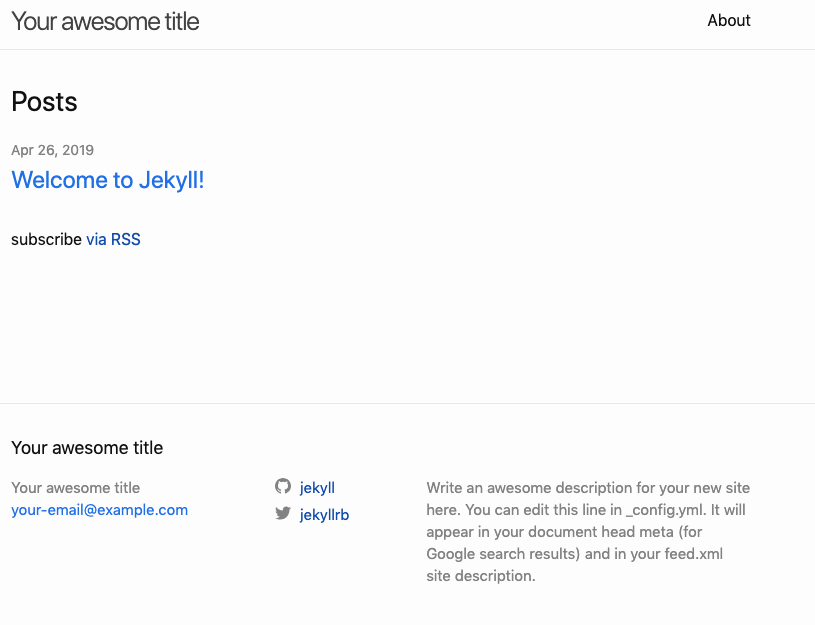
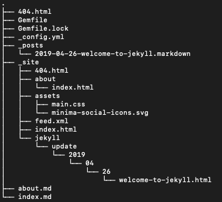
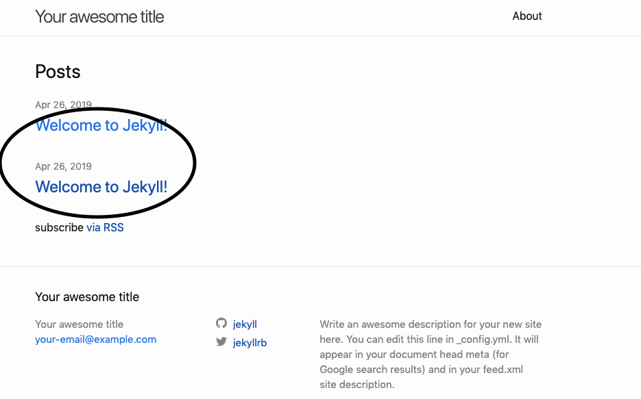
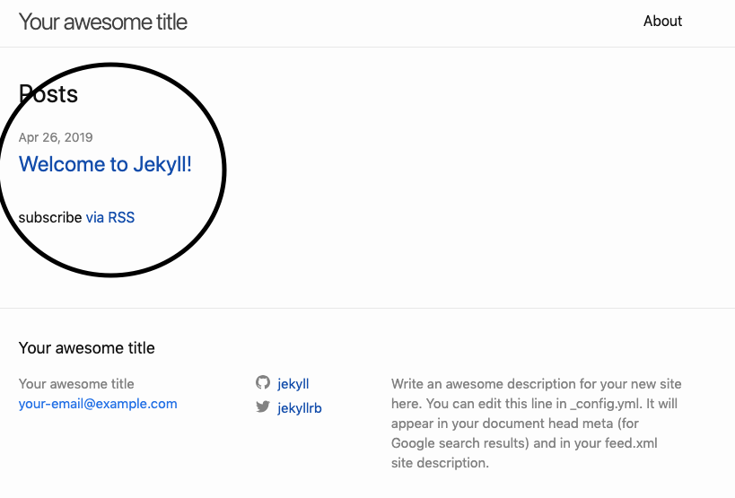

- 简介：jekyll 是一个将纯文本转换为静态网站和博客的框架，github默认支持。
快速入门
- 安装一个完整的Ruby 开发环境
- 安装 Jekyll 和 bundler gems
gem install jekyll bundler
创建一个全新的 Jekyll 网站
-
方法一 jekyll new myblog
方法二 mkdir myblog
cd myblog
jekyll new .-
进入新创建的目录
方法一 cd myblog方法二 或者直接是当前目录
构建网站并启动一个本地 web服务
bundle exec jekyll serve 有的机器需要管理员权限 (sudo bundle exec jekyll serve)
在浏览器中打开 http://localhost:4000 网址就可以一睹 jekyll 的庐山真面目了

到这里我们已经对 jekyll 有了一个简单的印象了接着我们就新建一个自己的静态页面吧
我们先看一下 jekyll 的目录结构

首先我们了解一下 jekyll 的配置文件
_config.yml中的最基本的几个设置title: 这个静态网站的titleemail: 你的电子邮件地址description: 网站的描述baseurl: host:port:/baseurlurl: 网站对应的网址twitter_username: twitter的名字github_username: github的名字
接着我们进入主题:新建一个自己的静态页面
cd _posts cp 2019-04-26-welcome-to-jekyll.markdown 2019-04-26-welcome-to-jekyll_1.markdown- 到这里我们已经新建了自己的一张自己的页面了如下：

- 也就是说我们只要在
_posts这个文件夹下新建markdown文件jekyll就会给我们自动加载 (当然这是错的)
mv 2019-04-26-welcome-to-jekyll_1.markdown 1.markdown
发现刚才我们新建的静态网页消失了，原来jekyll文件是有固定的格式的 年-月-日-文件名
- 现在我们打开刚才新建的
markdown的文件vi 2019-04-26-welcome-to-jekyll_1.markdown很明显就可以看出上面---开头---结尾的部分是对这个文档的描述 layout: 文件处理方式title: 文件的titledate: 时间categories: 类别
接着就是静态页面的正文部分支持markdown的语法（自行研究markdown的语法）
说到这里相信各位小伙伴都会新建
jekyll的静态页面了吧，接下来我们了解一下jekyll的主题。（毕竟jekyll初始化的主题不能满足所有人的需要）推荐一个网站Jekyll Themes里面有很多 jekyll 的主题各位小伙伴可以去寻找自己喜欢的样式了。然后下载下来
bundle exec jekyll serve运行它，每一个主题都有自己特定的一些规范各位小伙伴可以自行了解，我会向大家介绍其中的一个主题也就是本博客使用的主题 jekyll-TeXt-theme